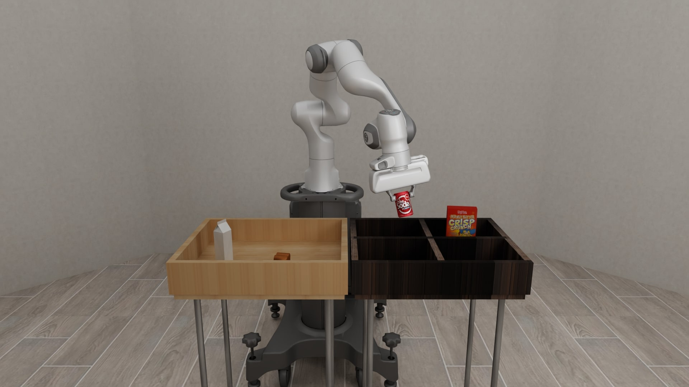

Wen-Han Hsieh (謝文瀚)

Hi! I’m Wen-Han. I am currently a visiting student at Berkeley Artificial Intelligence Research Lab (BAIR), where I’m advised by Professors Trevor Darrell, Koushil Sreenath and Haozhi Qi.
Previously, I obtained my B.S. in MechE at National Tsing Hua University.
My research interests center around:
- Embodied AI
- Robot Learning
- Dexterous Manipulation
Outside of research, I love playing basketball üèÄ & singing üé§.
Feel free to contact me through Email or Linkedin, I am happy to coffee chat : )
Selected Publications
(*: Equal contribution. Co-first Author.)
IEEE International Conference on Robotics and Automation (ICRA), 2026

Conference on Empirical Methods in Natural Language Processing (EMNLP), 2025

Advanced in Neural Information Processing Systems (NeurIPS) , 2025
International Conference on Knowledge Innovation and Invention (ICKII), 2024
Best Paper Award
Best Paper Award
